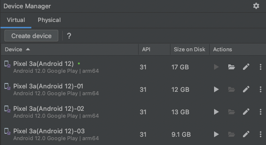
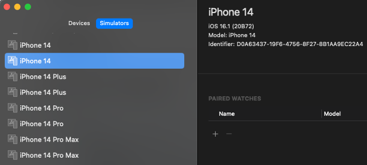

Automatic device detection with profile naming convention
You can determine the virtual/real device to use in the test by profile naming convention.
As of version 1.x
As of shirates-core version 1.x, you have to configure profile to give capabilities that required for the device you want to use explicitly.
testConfig.json
...
"profiles": [
{
"profileName": "Android 12",
"capabilities": {
"automationName": "UiAutomator2",
"platformName": "Android",
"platformVersion": "12"
}
}
]
...
As of version 2.x
Now you can specify the device that you want to use by Profile Naming Convention. You don’t have to configure profile in profile capabilities in config.json. Just specify profile name.
testConfig.json
...
"profiles": [
]
...
Example (Android)
You can specify AVD name as profile name in testrun file.
testrun.properties
android.profile=Pixel 3a API 31
Run the test. AVD Pixel 3a API 31 is searched and launched.
Console
63 2022/12/19 01:09:50.808 {} [info] () Searching device for the profile. (profileName=Pixel 3a API 31)
64 2022/12/19 01:09:54.224 {} [info] () emulator @Pixel_3a_API_31 -no-boot-anim -no-snapshot
65 2022/12/19 01:10:00.423 {} [info] () Connected device found. (Pixel_3a_API_31:5554, Android 12, emulator-5554)
Example (iOS)
You can specify simulator device name as profile name in testrun file.
testrun.properties
os=ios
ios.profile=iPhone 14(iOS 16.1)
Run the test. Simulator device iPhone 14(iOS 16.1) is searched and launched.
Console
61 2022/12/19 01:20:34.730 {} [info] () Searching device for the profile. (profileName=iPhone 14(iOS 16.0)-01)
62 2022/12/19 01:20:38.265 {} [info] () Device found. (iPhone 14(iOS 16.0)-01, iOS 16.0, 4801481D-60AA-4A1A-BFC5-4C636ADF4B3A)
Profile Naming Convention
Android
| Pattern | Profile Name | Description |
|---|---|---|
| AVD name | Pixel 3a API 31 | Android virtual device Pixel 3a API 31 |
| model(os_version) | Pixel 3a(Android 12) | Connected device Pixel 3a(Android 12) |
| model(os_version) | Pixel 3a(12) | Connected device Pixel 3a(Android 12) |
| os_version | Android * | Connected device |
| os_version | Android 12 | Connected device Android 12 |
| os_version | 12 | Connected device Android 12 |
| udid | emulator-5554 | Connected emulator udid:emulator-5554 |
| udid | 14141JEC20492X | Connected real device udid:14141JEC20492X |
iOS
| Pattern | Profile Name | Description |
|---|---|---|
| deviceName | Device 1 | iOS device named Device 1 |
| os_version | 16.2 | iOS device (iOS 16.2) |
| model(os_version) | iPhone * | iOS device |
| model | iPhone 14 | iOS device (iPhone 14) |
| model(os_version) | iPhone 14(16.2) | iOS device (iPhone 14, iOS 16.2) |
| udid | D0A63437-19F6-4756-8F27-8B1AA9EC22A4 | iOS device (udid:D0A63437-19F6-4756-8F27-8B1AA9EC22A4) |
Android Emulator
Open Android Studio and see virtual tab in Device Manager.

You can specify AVD name as profile name.
Pixel 3a(Android 12)Pixel 3a(Android 12)-01Pixel 3a(Android 12)-02Pixel 3a(Android 12)-03
Specified AVD is automatically launched in test startup process if it is not launched.
iOS Simulator
Open Xcode and see Simulators tab.

You can specify simulator device name as profile name.
iPhone 14(16.0)iPhone 14(16.1)iPhone 14 Plus(16.0)iPhone 14 Plus(16.1)iPhone 14 Pro(16.0)iPhone 14 Pro(16.1)iPhone 14 Pro Max(16.0)iPhone 14 Pro Max(16.1)
Specified simulator device is automatically launched in test startup process if it is not launched.